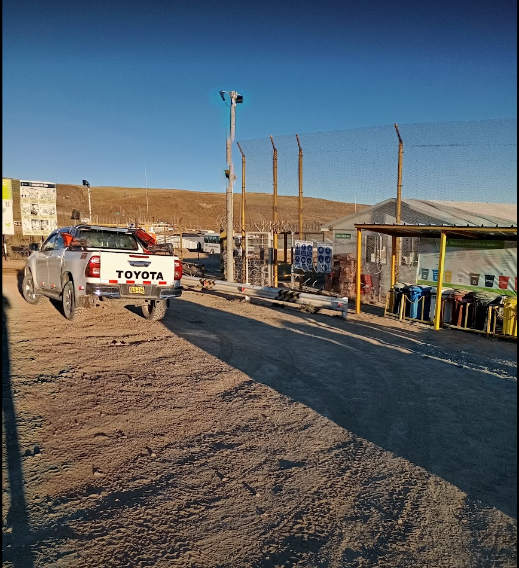
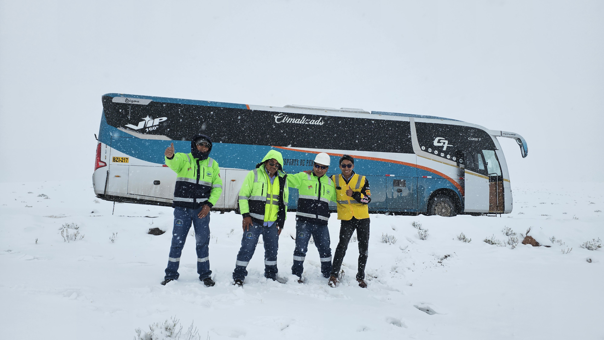

Datos personales
Biografía profesional
Soy estudiante de la carrera de Contabilidad en la Universidad Católica San Pablo. Tengo interés en el ámbito contable, financiero y empresarial. Actualmente complemento mi formacion academica con el curso de Ciencias de la computacion a cargo del docente Ernesto Cuadros Vargas, donde estoy desarrolando conocimientos en tecnologias, programacion y diseñp de paginas web. Busco fortalecer mis conocimientos, desarrolar nuevas habilidades y adquirir experiencias que contribuyan a mi crecimiento academico y profesional.
Hobbies e intereses
Automovilismo y Fórmula 1
Apasionado por la Fórmula 1, las competencias de resistencia y las 24 Horas de Le Mans. Sigo especialmente a Max Verstappen, Sergio Pérez y Oscar Piastri, pilotos que me inspiran valores como la ambición, la perseverancia y la determinación. También encuentro en el automovilismo una oportunidad para aprender sobre conducción, estrategia y seguridad vial.
Tecnología y desarrollo
Me apasiona la tecnología y la informática. Actualmente estoy explorando el diseño y desarrollo de páginas web, aprendiendo a utilizar herramientas digitales y descubriendo cómo transformar ideas en proyectos. Me interesa seguir adquiriendo conocimientos y desarrollar nuevas habilidades tecnológicas.
Formación académica
Universidad Católica San Pablo
Carrera: Contabilidad
Estado: Estudios universitarios en curso
Ciudad: Arequipa, Perú
Experiencia laboral
Conductor de camionetas 4x4 – Adgeminco y Etcomin

Experiencia en conducción de camionetas 4x4 en entornos mineros, con capacidad para adaptarme a diferentes condiciones de terreno. Orientado a la conducion defensiva responsable y al cumplimiento de los protocolos de seguridad.
Conducción de volquetes
.png)
Experiencia en operación y conducción de volquetes para el transporte de mineral. Compromiso con la seguridad vial, el manejo responsable de vehículos pesados y el cumplimiento de las actividades asignadas.
Tripulante de transporte – Sumayro

Responsable de la seguridad y supervisión del personal durante los traslados hacia unidades mineras. Encargado del control de pasajeros, apoyo al conductor durante el recorrido y monitoreo de condiciones de seguridad mediante el sistema TRANSLOGP, reportando incidencias y evidencias fotográficas a la empresa.
Cursos y docentes
Asignaturas de mi formación universitaria y sus respectivos docente.
- Curso: Introducción a Computación – Docente: ERNESTO CUADROS VARGAS – LinkedIn
Red de amistades y compañeros
Enlaces a los perfiles y páginas web de mis compañeros universitarios.
Contacto
Correo: jhon.gutierrez@ucsp.edu.pe
LinkedIn: Mi perfil profesional
Universidad: Universidad Católica San Pablo